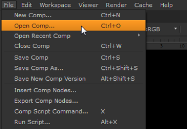
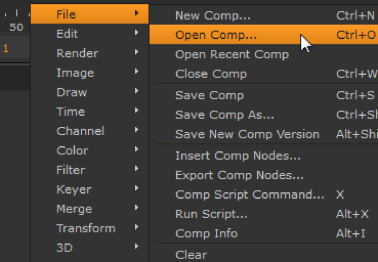

的 Nuke 菜单栏出现在屏幕顶部，主窗口外。此菜单以选项开始 文件 , 编辑 , 工作空间 等等。当指示这样做时，从菜单栏中进行选择，或者单击鼠标右键从菜单栏的弹出版本中进行选择。
|
 |
| 的 Nuke 菜单栏。 |
“右键单击” 菜单是高度上下文的。它的选项根据鼠标指针的位置而改变。例如，在节点图形上单击鼠标右键，您将看到菜单栏中的选项和可以从工具栏中插入的节点。在查看器窗格上单击鼠标右键，您将看到一个查看器选项菜单。
|
 |
| “右键单击” 菜单。 |
如果找不到适当的控件或菜单选项，请尝试右键单击菜单。许多功能隐藏在菜单中，直到你需要使用它们。
注意: Nuke 屏幕顶部的菜单栏在操作系统之间的组织有点不同，但是右键菜单包含相同的选项, 不管你使用的是什么系统 Nuke .
|
|